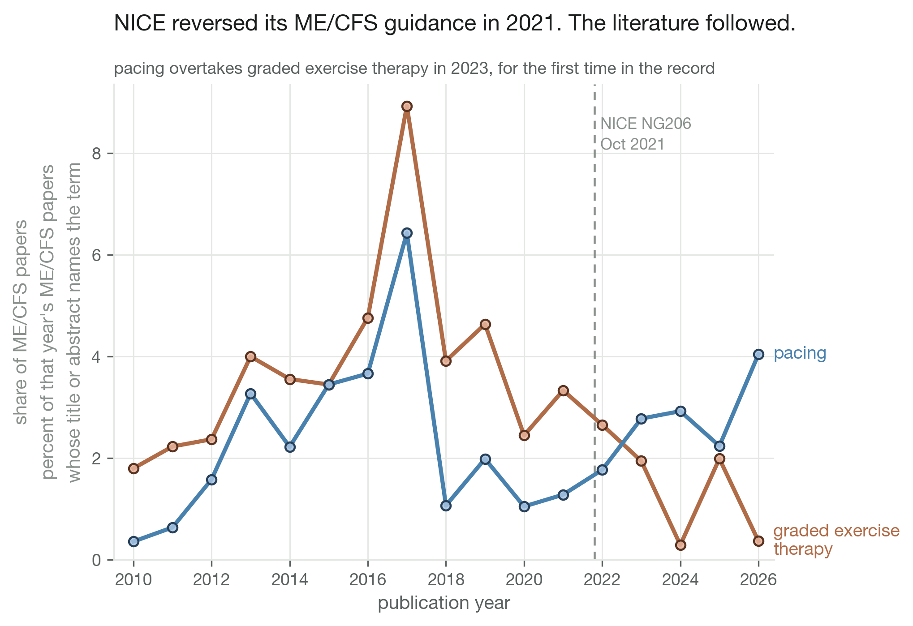
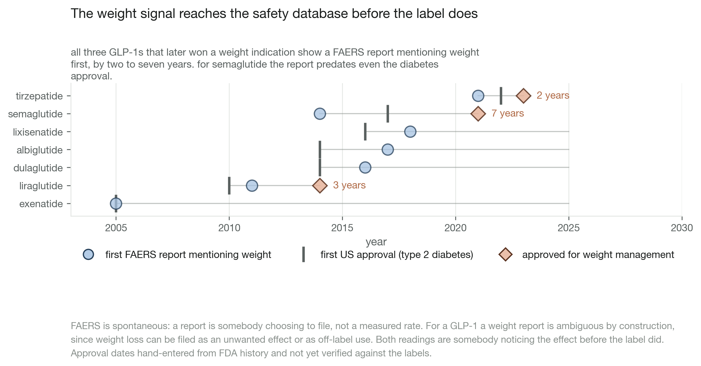
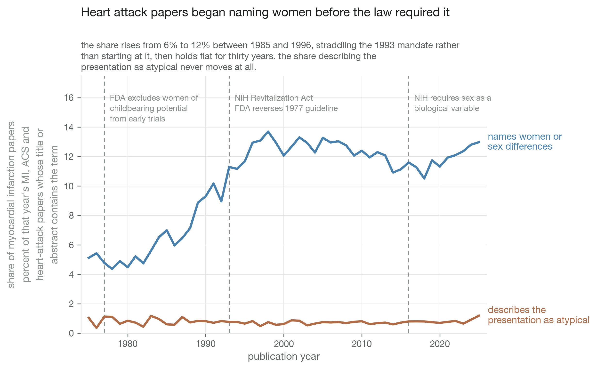

How long evidence takes to reach practice
four case studies timing guidelines, labels and the literature
- skills
- bibliometric trend analysis · pharmacovigilance signal analysis · rate-limited API pipelines · denominator normalisation · time-series figure design
- tools
- data
- PubMed term counts by year · openFDA FAERS · ClinicalTrials.gov API v2 · FDA approval dates (hand-entered)
- status
- in progress
question
How long does a change in evidence or a safety signal take to show up in guidelines, drug labels and published papers?




calls made
- PubMed term counts by year, not the trial registry. these conditions have almost no registered trials, and UK practice under NICE is largely never on a US registry.
- FAERS weight reports as a share of each drug's own reports, not raw counts. total report volume climbs every year by itself.
- patents left out of the GLP-1 cascade rather than proxied. no clean structured source, and a weak proxy is worse than an acknowledged gap.
- one search term per invocation, merged after. a fifty-year sweep at the unauthenticated NCBI rate does not finish inside a short timeout.
what broke
- the FDA approval dates carrying the signal-versus-label figure were typed by hand and are still flagged unverified against the labels.
- footnotes under the axes tripped the repo's own clipping audit, because the canvas only expands at save time.
- the ME/CFS case does not separate the guideline change from the earlier trial controversy. the notebook says so instead of reading the trend as lag.
what i tried
tried the trial registry first for the ME/CFS and EDS questions. too few registered trials use the terms at all, so switched to PubMed counts by year.